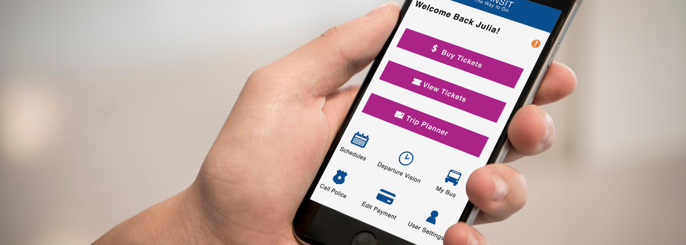

NJ Transit: Streamlining Ticket Purchases
Background
I downloaded NJ Transit’s MyTix to purchase electronic tickets. It seemed like a good alternative to carrying change every time I got onto the bus.
While the app was convenient, there were questionable design issues, such as uneven icon resolutions, ads placed right below the "Back" button, and unaligned form fields. The buttons on the main page itself were different sizes, perhaps to emphasize importance, but in practice created an unbalanced layout. The app itself did not feel intuitive. For example, I’d have to go through several screens to pick a bus stop, or I’d stare at the payment screen wondering how to proceed.
It turned out that many users had the same issues. Their main points of contention were that the UI was clunky, barely functional, and not pretty, sentiments that reflected my own experience with the app.
There’s only one thing to do: Improve the app!
In-Depth User Research
To identify detailed pain points, I let my mom try the app out. Her task was simple: buy a ticket. The task turned more complicated than both of us anticipated.
To summarize her complaints:
- Rather than selecting the “Buy” option, she selected the “Trip Planner” link to buy her ticket. She was not pleased with scrolling down a list of stations to select the origin/ destination points. Furthermore, although she wanted to select the arrive by time, she could only specify the departure time.
- Since the Trip Planner option left a bad taste in her mouth, she went back and selected the "Buy" option instead. While trying to buy a bus ticket, she was confused by the transition between picking the origin station and picking the destination station. It turned out that the only difference between the origin station screen and the destination station screen was the heading on the top, as everything else looked similar.
The Wireframe:
Combining my personal experience with the app, my mom’s experience with the app, and the complaints mentioned in user reviews, I used the information I gathered to create the wireframe.
I generally followed the flow of the original app for the wireframe, with 2 major exceptions. One, I added a map of New Jersey when purchasing bus/train tickets to provide a visual representation of the route.
Additionally, I resized the buttons on the home page to be of equal size. I placed the “Buy” button on the top row to hint at its importance. The less important buttons were placed on the bottom rows
I tested the wireframe with my mother and her comments were as follows:
- She was confused by the zoom-in and zoom-out buttons on the map, and suggested that I add magnifying glasses to those buttons
- After struggling with the checkout design, she asked me to look at Amazon’s UI . She did not understand the point of having “Favorite Pay” in the checkout page, even though it was in the original app.
- She did not see the need for a separate screen to appear when selecting the origin and destination stations. She'd rather see all the station choices on the same screen.
First Draft, with the colors
Colors of this redesign were based on the NJ Transit logo, although I opted for lighter, more saturated colors to make navigation more vibrant. Additionally, brighter colors also help increase readability. Thus, I drafted this design using the wireframe and my mother's suggestions as guidelines.
Once again, my mother tested out the draft, and her comments were as follows
- She asked me how to buy bus tickets by zone numbers. Admittedly, buying tickets by number of zones had confused me as well. We agreed to remove this option.
- I needed a review page before confirming purchase of tickets. By the same logic, I needed a warning pop-up before activating tickets.
- After selecting the origin and destination points, those points would appear on the map. In this draft, I had used a “o” icon for the origin and the GPS icon for the destination. It turned out my mom didn’t understand what those icons meant, and suggested using different icons instead.
- The “Alerts” on the home page took up too much space.
Final Draft
Once again, I followed my mother’s suggestions in this round. Additionally, I opted to place the “Buy Ticket” “View Tickets” and “Trip Planner” as the main buttons on the home page, with the rest of the buttons arranged below them:
Besides rearranging the buttons, I had collapsed the original “Alerts” design into a single “Welcome” line—to view new alerts, the user simply need to tap on the arrow next to the line.
Final review with my mom
Upon testing it, my mom said, “you’ve made a great deal of improvement on the design.” In fact, she was quiet during the testing, a good indicator that she had no issue navigating through the prototype.
Conclusion
While the original app was serviceable, the design aspects left a lot to be desired. I sought to improve the design to make the app more pleasant to use. After several rounds of feedback and incremental improvements, I designed a prototype that addressed the concerns outlined in the negative user reviews on the app’s download page.